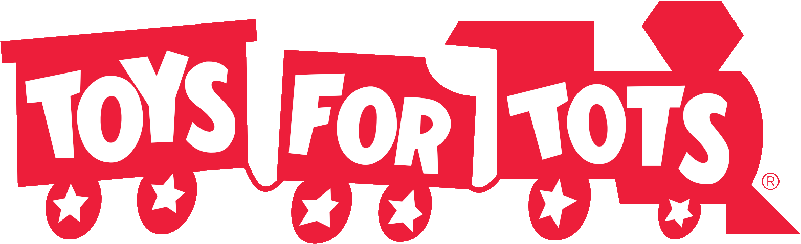

Bot Bash Charity Brawl 2018
Announcing Bot Bash Charity Brawl 2018 benefiting Toys for Tots! Bot Bash Party and the TASBot crew have teamed up with 8 BattleBots drivers in a double elimination tournament.
The event has ended. Thanks to all of you we have managed to raised $2,610 for Toys for Tots!
About the charity
The mission of the Marine Toys for Tots Foundation is to assist the U. S. Marine Corps in providing a tangible sign of hope to economically disadvantaged children at Christmas. This assistance includes providing day-to-day leadership and oversight of the Program, raising funds to provide toys to supplement the collections of local Toys for Tots Campaigns, to provide promotional and support material and defray the costs of conducting annual Toys for Tots Campaigns.
To learn more about Toys for Tots, visit https://www.toysfortots.org